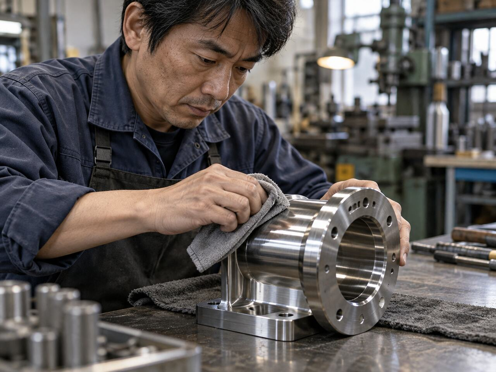
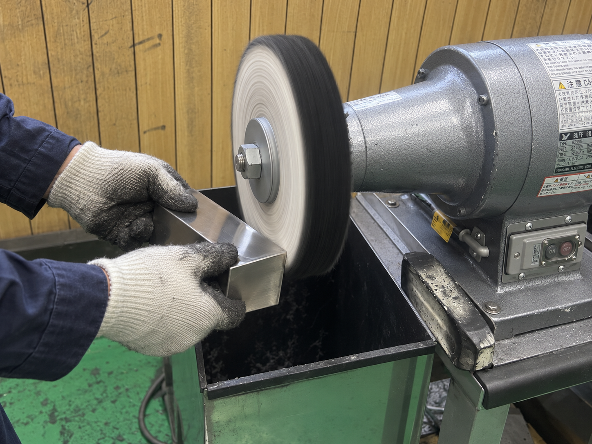

素材を選ばない
溶接技術
ステンレス、鉄、アルミ。それぞれの性質を見極め、用途に合った確かな溶接を行います。

OUR CRAFT
平精密加工は、東京都八王子市美山町で金属加工を行っています。
一点ものの製作から、既存品の修理・仕上げまで。まずはご相談ください。
STRENGTH
ステンレス、鉄、アルミ。それぞれの性質を見極め、用途に合った確かな溶接を行います。
ただ接合するだけでなく、研磨・表面仕上げまで丁寧に対応。見た目と使いやすさを両立します。
「1個だけ作りたい」「急ぎで必要」にも、内容を確認のうえ柔軟に対応します。

SERVICE
CRAFT & QUALITY


CONTACT
図面・現物を確認し、加工方法をご提案します。
メールでお問い合わせCOMPANY